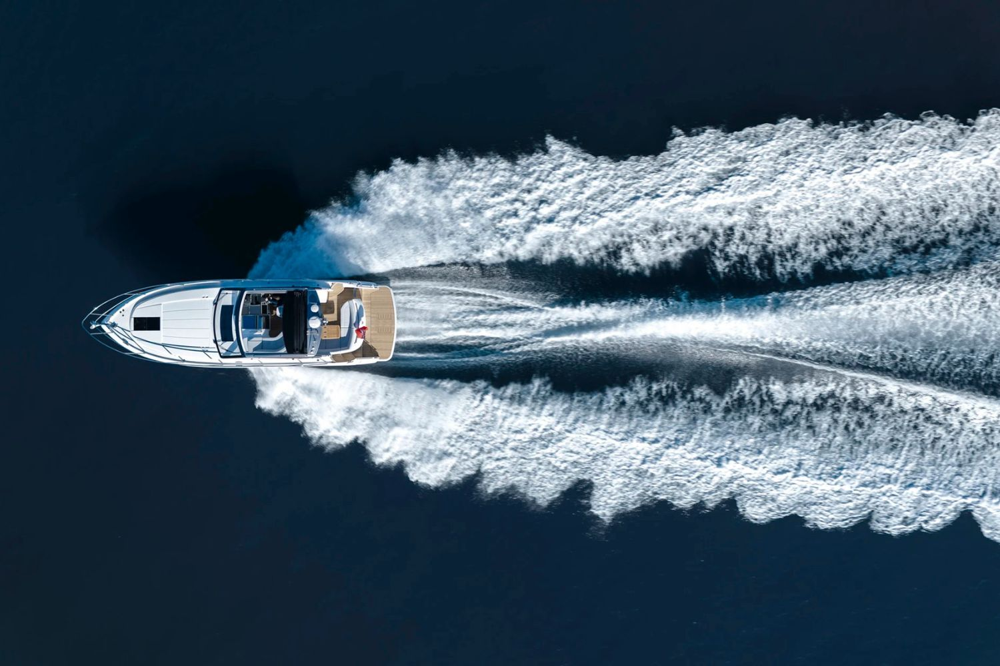
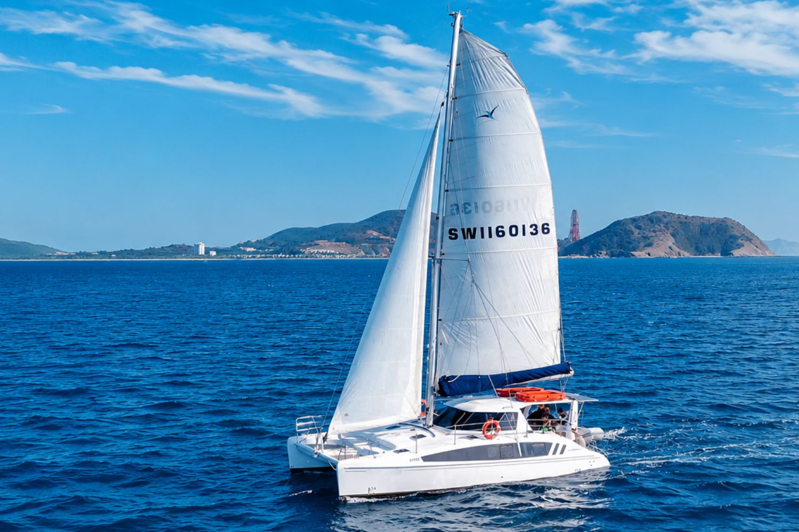
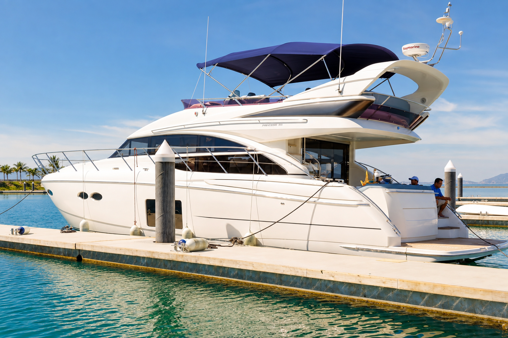
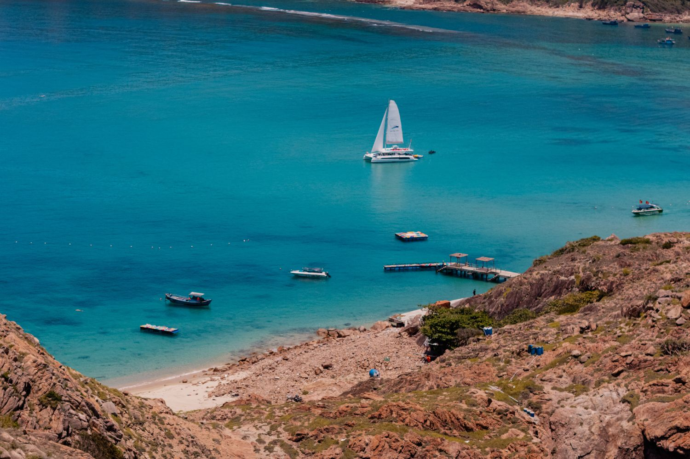
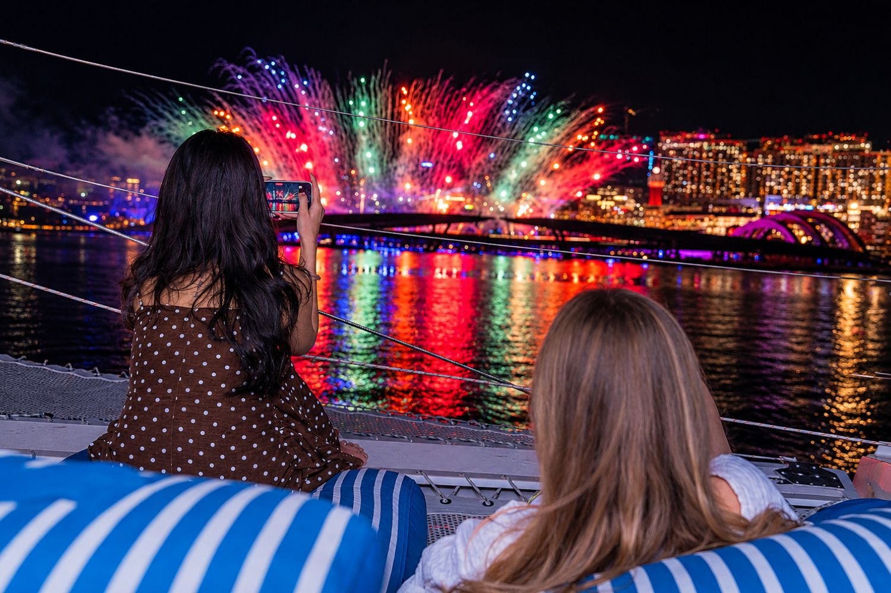
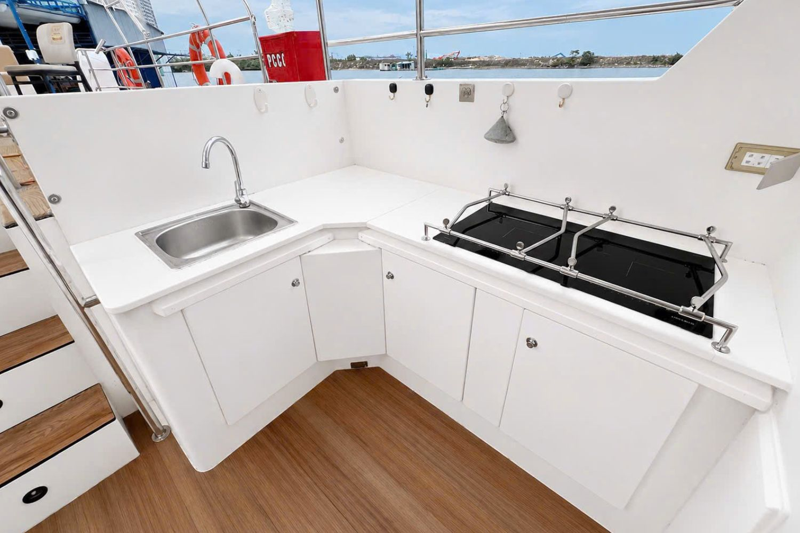
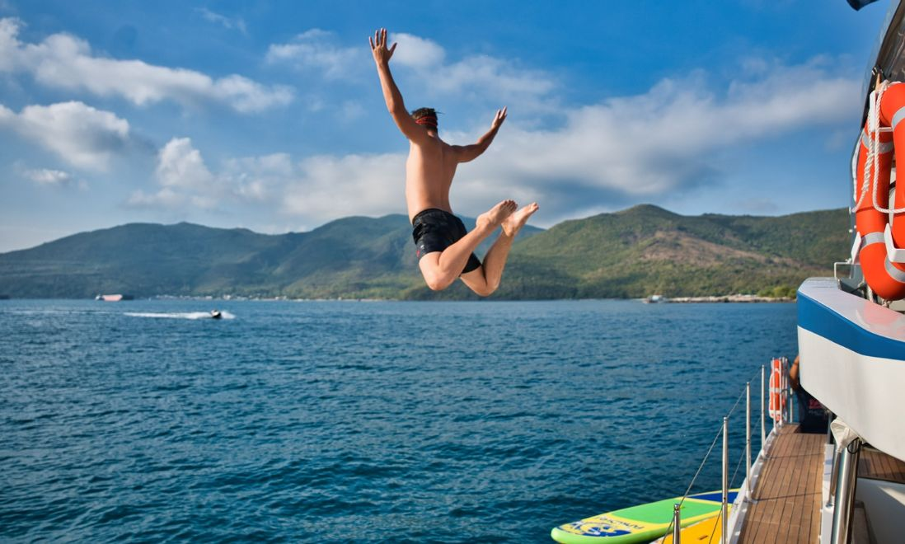
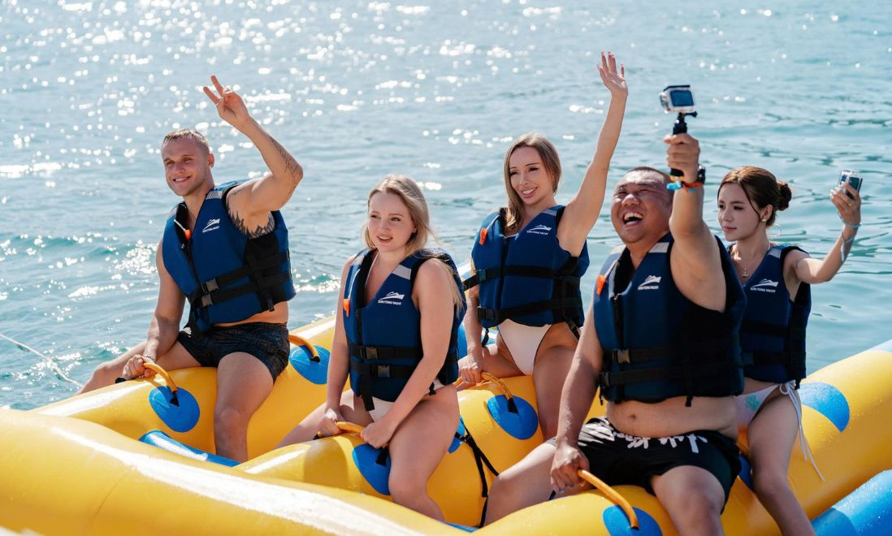
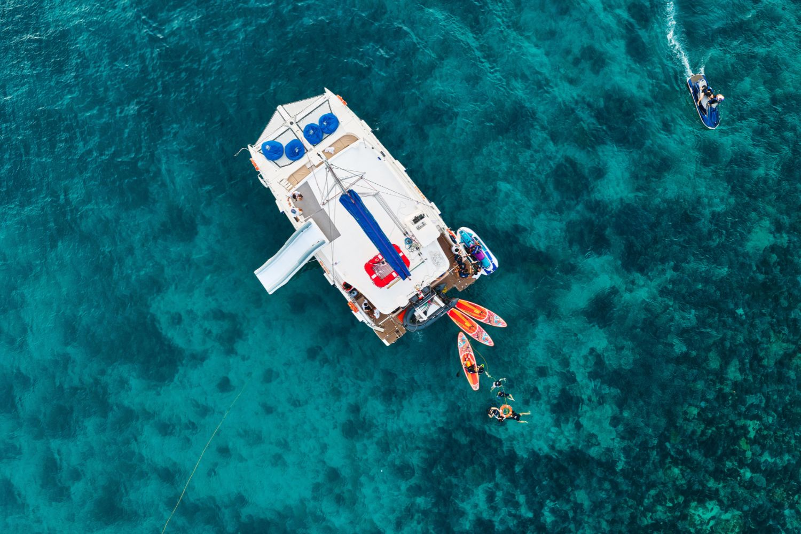

Sunrise Charter · 9:00–14:00
Sáng trong veo, nước lặng ☀️
Nước lặng, nắng còn dịu: thời điểm đẹp để lặn ngắm san hô, chèo SUP và dùng bữa trưa trên boong.


Bao trọn catamaran buồm hoặc du thuyền Princess cho hội 5–42 người. Chill trên boong, lặn ngắm san hô, chèo SUP, săn hoàng hôn 🌅 — đưa đón khách sạn & đồ ăn uống đã có sẵn trong gói.
Dữ liệu thời tiết: Open-Meteo · Chỉ mang tính tham khảo, thuyền trưởng sẽ quyết định lịch trình theo điều kiện thực tế.

Video từ kênh Leo Yacht Tour VN. Bấm nút phát để xem — lượt xem được tính cho kênh. Video không tự chạy.
Với dịch vụ thuê du thuyền riêng, chi phí được tính theo du thuyền thay vì theo đầu người: toàn bộ con tàu dành riêng cho nhóm của bạn. Chúng tôi giúp bạn chọn đúng tàu, giữ chỗ và lo mọi trao đổi với đội ngũ Theia Yachting bằng tiếng Việt.
Chúng tôi là cộng tác viên bán vé của Theia Yachting. Du thuyền và dịch vụ trên tàu do Theia vận hành; hình ảnh, thông số, giá lấy từ theiayachting.com.
Phú QuốcThuyền buồm 1360 – Coral II là mẫu catamaran rộng rãi dành cho những chuyến thuê du thuyền riêng quanh vùng biển Phú Quốc.
Phú QuốcLuxury Sailing Catamaran 1580 – Onyx mang đến trải nghiệm thuê du thuyền riêng đầy thoải mái quanh Phú Quốc, kết hợp không gian rộng rãi, thiết kế hiện đại và dịch vụ chu đáo cho những ngày thư giãn trọn vẹn trên biển.
Phú QuốcLagoon 450 F – Azure là mẫu catamaran buồm rộng rãi và thanh lịch, dành cho những chuyến du ngoạn riêng trên biển quanh Phú Quốc.
 Nha Trang
Nha TrangMotor Yacht Merry Fisher 795 – Jade là lựa chọn phù hợp cho những ai yêu thích những chuyến du ngoạn riêng tư, quy mô nhỏ và muốn tận hưởng một ngày trên biển theo cách thoải mái nhất.
 Nha Trang
Nha TrangDu thuyền cao tốc Titan là một du thuyền máy rộng rãi, được thiết kế cho những chuyến đi biển thoải mái và di chuyển nhanh giữa các đảo tại Việt Nam.
 Nha Trang
Nha TrangDu thuyền catamaran cao cấp dài 13,6 mét được thiết kế dành cho những ai tìm kiếm sự riêng tư, thoải mái và những khoảnh khắc thư giãn trọn vẹn trên biển.
Nha TrangLuxury Sailing Catamaran 1460 – Blue mang đến trải nghiệm thuê du thuyền riêng đẳng cấp tại Nha Trang, kết hợp giữa thiết kế sang trọng, công nghệ hiện đại và sự thoải mái của một du thuyền catamaran cao cấp.

Nha TrangLuxury Motor Yacht V40 – Pearl là lựa chọn lý tưởng cho những ai muốn tận hưởng một ngày trên biển trong không gian riêng tư, thoải mái và tinh tế.

Nha TrangDu thuyền buồm 1160 lite – Silver là lựa chọn lý tưởng cho những ai muốn tận hưởng một ngày thư giãn trên biển trong không gian riêng tư và đẳng cấp.

Nha TrangPrincess 56 – Diamond là du thuyền động cơ rộng rãi với flybridge, phù hợp cho các chuyến charter riêng tại Nha Trang, những ngày thư giãn trên biển cùng gia đình và bạn bè, cũng như các dịp kỷ niệm và sự kiện riêng.
Giá niêm yết bằng USD theo theiayachting.com ngày 20/11/2026, cho chuyến nửa ngày 5 giờ, tính trọn du thuyền (không tính theo đầu người). Giá cả ngày 10 giờ và giá quy đổi VNĐ: Liên hệ.
Nước lặng, nắng còn dịu: thời điểm đẹp để lặn ngắm san hô, chèo SUP và dùng bữa trưa trên boong.
Ra khơi buổi chiều, xuống nước khi nắng dịu, ngắm mặt trời lặn từ lưới mũi tàu.

Nhiều thời gian hơn cho các đảo nhỏ, hoạt động dưới nước và bữa ăn dài cùng người thân.

Coral II và Onyx (Phú Quốc) có pháo hoa trong danh sách bao gồm cho tour buổi tối.

Cầu hôn, sinh nhật, sự kiện công ty — Theia thiết kế lịch trình theo nhu cầu của nhóm.
Các hoạt động Theia Yachting tổ chức trên du thuyền. Lặn ngắm san hô, SUP và câu cá có trong gói của phần lớn tàu.
 Lặn ngắm san hô
Lặn ngắm san hô Mô tô nước
Mô tô nước Câu cá
Câu cá Lặn bình khí
Lặn bình khí Cầu trượt nước bơm hơi
Cầu trượt nước bơm hơi Xe đạp nước
Xe đạp nước Ván chèo SUP
Ván chèo SUP
Nhảy biển
Phao kéoMô tô nước, lặn bình khí, phao kéo… có thể là dịch vụ bổ sung — phí cần xác nhận khi đặt.
Giá niêm yết theo du thuyền, không ghép khách. Chúng tôi báo giá VNĐ và điều khoản bằng văn bản trước khi bạn đặt cọc.
Từ Merry Fisher 5 khách đến catamaran Onyx 42 khách; catamaran buồm, Princess và du thuyền cao tốc.
Đưa đón khách sạn, đồ ăn uống, trái cây, khăn tắm, SUP, lặn ngắm san hô, câu cá — có ở phần lớn các tàu.
Gợi ý tàu theo số khách và dịp đặc biệt, hỗ trợ từ lúc hỏi đến lúc lên tàu.

— Theia Yachting
buồm 1360 – Coral II, buồm 1580 – Onyx, Catamaran Lagoon 450F – Azure. Điểm khởi hành tùy du thuyền và trải nghiệm — xác nhận khi đặt chỗ. Văn phòng Theia: Meyhomes Capital, 42 đường Hải Đường, Phú Quốc, tỉnh An Giang.
Xem bản đồ →
Khởi hành từ Bến du thuyền Ana Marina Nha Trang, 01 đường Nguyễn Cơ Thạch, phường Bắc Nha Trang, tỉnh Khánh Hòa — trụ sở chính của Theia Yachting.
Xem bản đồ →Tụi mình không đăng review giả. Đánh giá công khai của khách đã đi tàu Theia Yachting có tại trang chính thức của Theia.
Từ 15:00 đến 20:00 — hành trình Sunset Charter trên catamaran 1360 – Coral II: gió, nước, bữa ăn trên boong và màn pháo hoa của tour buổi tối.

Bốn câu hỏi giúp bạn chọn trong 10 du thuyền của Theia Yachting: đi mấy người, đi đâu, muốn cảm giác gì và ngân sách bao nhiêu.

Checklist gọn cho chuyến du thuyền 5 hoặc 10 giờ: phân biệt rõ cái gì Theia đã chuẩn bị, cái gì bạn nên tự mang.
Trả lời dựa trên thông tin Theia Yachting công bố. Mục có nhãn Cần xác nhận với đại lý là thông tin chung — chúng tôi sẽ xác nhận cụ thể khi bạn đặt.
Chọn khung Sunset Charter 15:00–20:00 (5 giờ): ra khơi buổi chiều, xuống nước khi nắng dịu và ngắm mặt trời lặn từ lưới mũi tàu. Ở Phú Quốc hiện có 3 tàu: Coral II (tối đa 28 khách, $1490/5 giờ), Onyx (tối đa 42 khách, $1590/5 giờ) và Lagoon 450F – Azure (tối đa 15 khách, $2690/5 giờ). Coral II và Onyx có pháo hoa trong danh sách bao gồm cho tour buổi tối.
Các du thuyền trên trang do Theia Yachting vận hành (theiayachting.com). Chúng tôi là cộng tác viên bán vé của Theia: tư vấn, giữ chỗ và hỗ trợ bạn qua WhatsApp bằng tiếng Việt. Chuyến đi, thuyền trưởng và thủy thủ đoàn do Theia Yachting phụ trách.
Theia cung cấp dịch vụ thuê du thuyền riêng và các chuyến du ngoạn theo nhóm. Bạn có thể chọn hành trình 5 giờ, thuê riêng cả ngày, hoặc thiết kế lịch trình theo nhu cầu. Đội tàu gồm cả catamaran buồm và du thuyền động cơ, từ chuyến đi cho cặp đôi đến tiệc và sự kiện cho nhóm đông.
Các khung phổ biến theo Theia:
Lịch trình có thể điều chỉnh tùy du thuyền, thời tiết và mong muốn của bạn.
Giá thuê riêng được tính theo du thuyền, không tính theo đầu người. Cả con tàu dành riêng cho nhóm bạn, không ghép khách lạ. Giá niêm yết hiện tại (nửa ngày, 5 giờ) từ $590 (Merry Fisher 795 – Jade) đến $2990 (Princess 56 – Diamond). Giá cả ngày và giá quy đổi VNĐ vui lòng nhắn để được báo chính xác.
Tùy từng du thuyền, nhưng phần lớn chuyến đi bao gồm:
Một số tàu có thêm cầu trượt phao, xe đạp nước, pháo hoa cho tour buổi tối (Coral II, Onyx) hoặc đầu bếp riêng trên tàu (Lagoon 450F – Azure). Xem mục “Bao gồm” ở trang từng du thuyền.
Theia tổ chức chuyến đi tại Nha Trang và Phú Quốc. Ở Nha Trang, tàu khởi hành từ Bến du thuyền Ana Marina Nha Trang (01 Nguyễn Cơ Thạch, phường Bắc Nha Trang, Khánh Hòa). Ở Phú Quốc, điểm khởi hành tùy du thuyền và trải nghiệm bạn chọn — chúng tôi sẽ báo cụ thể khi xác nhận chỗ.
Hiện có 3 du thuyền tại Phú Quốc: Du thuyền buồm 1360 – Coral II (tối đa 28 khách, $1490/5 giờ), Du thuyền buồm 1580 – Onyx (tối đa 42 khách, $1590/5 giờ) và Catamaran Lagoon 450F – Azure (tối đa 15 khách, $2690/5 giờ).
Tùy tàu: nhỏ nhất là Merry Fisher 795 – Jade (tối đa 5 khách), lớn nhất trong danh sách hiện tại là Onyx (tối đa 42 khách). Theia cho biết đội tàu phục vụ nhóm từ 1 đến 48 khách. Cho chúng tôi biết số người và mục đích chuyến đi để được gợi ý tàu phù hợp.
Điền form “Đặt du thuyền” hoặc nhắn WhatsApp cho chúng tôi: ngày mong muốn, số khách, khung giờ (sáng / hoàng hôn / cả ngày) và du thuyền quan tâm. Chúng tôi kiểm tra lịch trống với Theia và gửi xác nhận cùng hướng dẫn thanh toán.
Chính sách bảo mật của Theia có nêu thanh toán bằng thẻ qua cổng OnePay. Mức đặt cọc, chuyển khoản và thời hạn thanh toán sẽ được báo khi xác nhận chỗ.
Thông tin chung — cần xác nhận với Theia trước khi đặt
Theia cho biết lịch trình có thể được điều chỉnh theo điều kiện thời tiết. Chính sách hủy, đổi ngày và hoàn tiền cụ thể không được công bố trên website — vui lòng hỏi chúng tôi trước khi đặt cọc để nhận điều khoản bằng văn bản.
Thông tin chung — cần xác nhận với Theia trước khi đặt
Có. Theia giới thiệu các tàu lớn như Coral II và Onyx phù hợp cho tiệc sinh nhật, đám cưới, sự kiện doanh nghiệp; Princess 56 – Diamond và Princess V40 – Pearl có thực đơn đồ ăn, thức uống tùy chỉnh. Trang trí, bánh, nhiếp ảnh… báo trước để được báo giá riêng.
Thông tin chung — cần xác nhận với Theia trước khi đặt
Các chuyến đi phù hợp cho gia đình (Theia giới thiệu nhiều tàu cho “gia đình, nhóm bạn”). Du thuyền cao tốc Titan liệt kê áo phao trong danh sách bao gồm; với các tàu khác, vui lòng xác nhận áo phao cỡ trẻ em khi đặt. Người không biết bơi vẫn có thể thư giãn trên boong.
Thông tin chung — cần xác nhận với Theia trước khi đặt
Theia liệt kê các hoạt động: lặn ngắm san hô, mô tô nước, câu cá, lặn bình khí, cầu trượt nước bơm hơi, xe đạp nước, ván chèo SUP, nhảy biển, phao kéo. Lặn ngắm san hô, SUP, câu cá có trong gói của phần lớn tàu; mô tô nước, lặn bình khí, phao kéo thường là dịch vụ bổ sung — phí cụ thể cần xác nhận.
Thông tin chung — cần xác nhận với Theia trước khi đặt
Lời khuyên chung: catamaran hai thân (Coral, Coral II, Blue, Silver, Onyx, Azure) được Theia mô tả là thiết kế “hai thân ổn định”, thường êm hơn khi neo nghỉ. Chọn khung buổi sáng, ăn nhẹ trước khi đi và mang thuốc chống say nếu bạn hay say sóng. Đây là lời khuyên tham khảo, không thay cho tư vấn y tế.
Thông tin chung — cần xác nhận với Theia trước khi đặt

Nhắn ngày đi, số khách và khung giờ — tụi mình check lịch trống với Theia Yachting rồi gửi xác nhận kèm giá quy đổi VNĐ. Nhanh gọn qua WhatsApp hoặc Telegram ⚡
 Quét mã để nhắn Leo - Yacht Tour trên WhatsApp
Quét mã để nhắn Leo - Yacht Tour trên WhatsAppĐã sao chép sẵn. Mở WhatsApp hoặc Telegram và dán để gửi cho chúng tôi nhé 💬